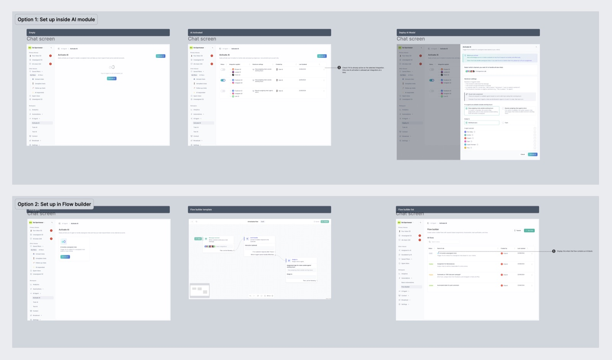
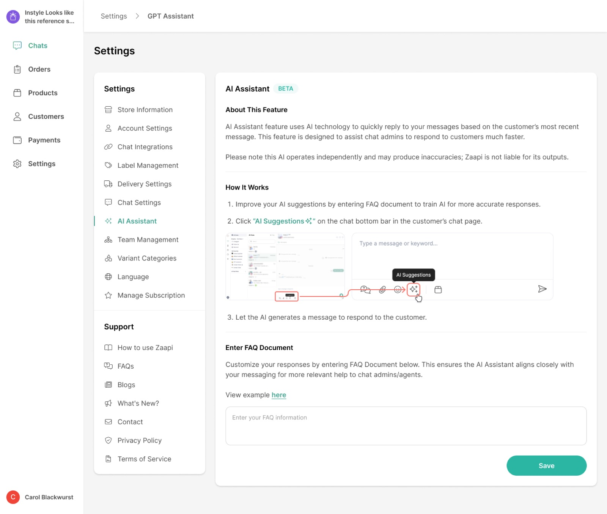
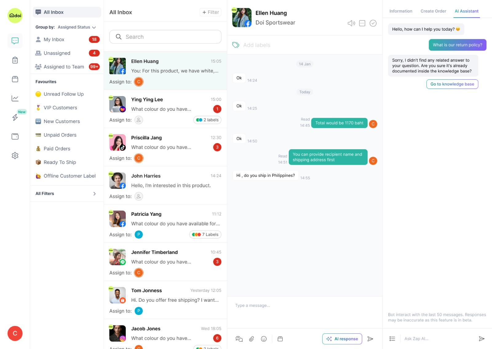
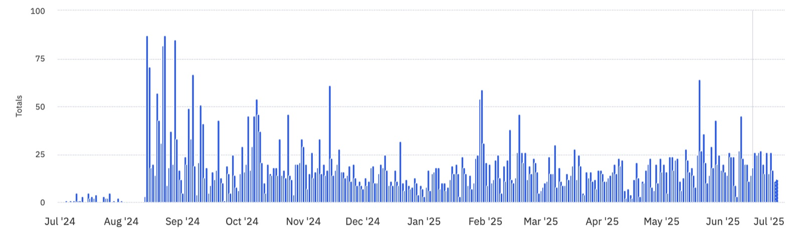
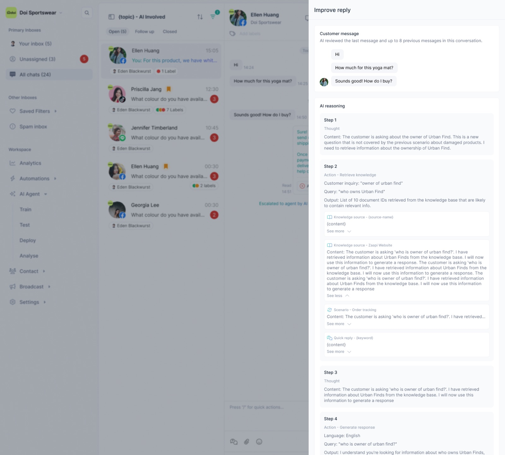
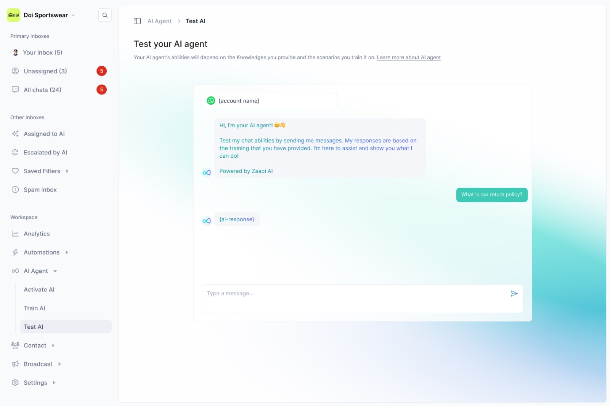
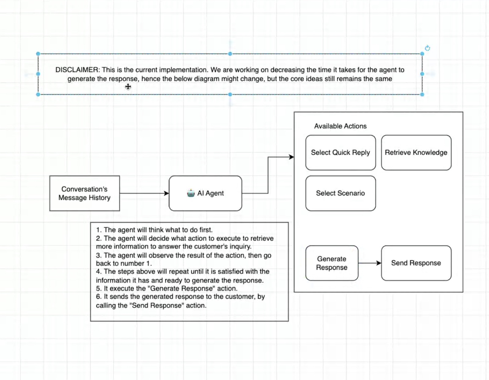
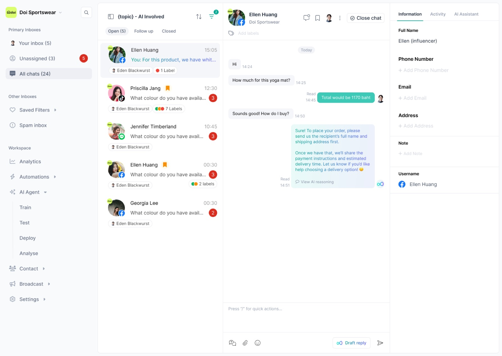
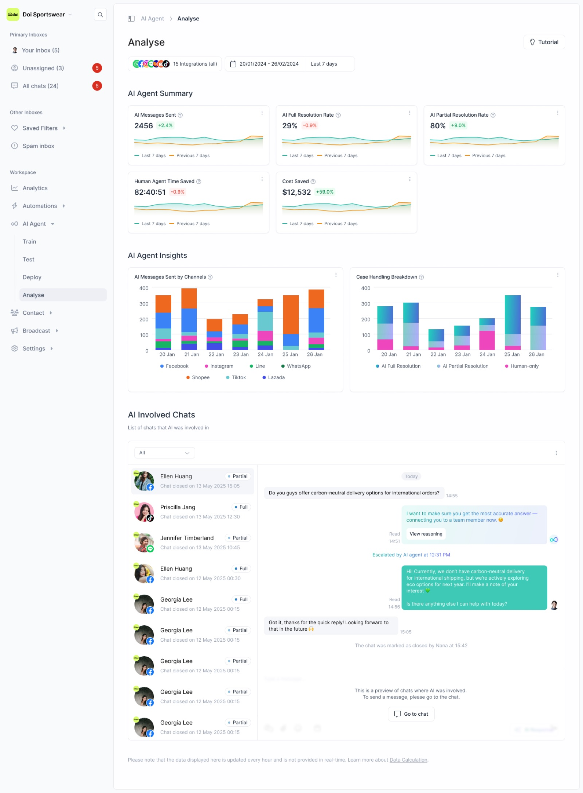
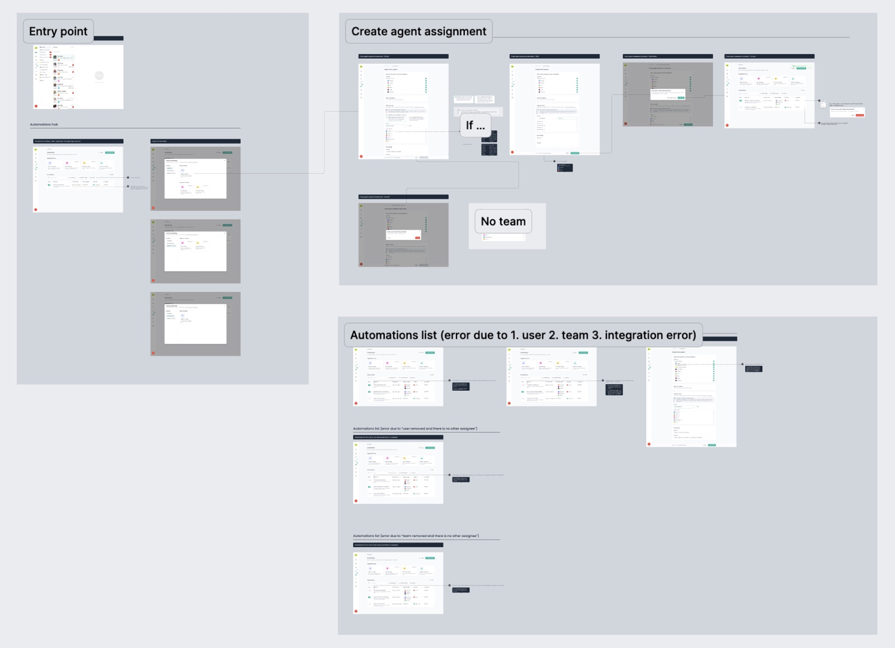

I designed Zaapi's AI chat agent: it checks customer context, cites its sources, follows policy, and stays human-controlled. It's now Zaapi's top revenue feature and fully resolves 61% of the tickets it handles.
AI chatbots went mainstream between late 2022 and early 2023.
From late 2022, sellers expected instant, reliable replies. Each new agent cost about $600 a month (2025 Thai salaries), just as Zaapi was expanding into Malaysia, Singapore, and the Philippines.
Engineering was already prototyping AI, so the question was never whether to ship it — but how to make it trustworthy enough for a brand to let it talk to its customers.
Agents hunted for context across tools, so replies were slow and inconsistent. AI could help — but each group feared a different risk.
Follow the most common request — "where's my order?" — through six steps.
AI reads the language, intent, and urgency.
To the right team — and if AI is on, AI takes the first reply.
From the brand's knowledge and order data — noting each source.
Short and on-brand. A person reviews it first, or AI sends it — the team decides.
Unsure? It hands off to a human. In 2.0, it can act itself — like cancelling the order.
Marked resolved by AI, human, or both. Unanswered questions show what to teach next.
Engineering could build the AI. My job was to make teams trust it enough to switch it on — and prove it with numbers. As Product Design Lead, I owned:
[Which roadmap calls were yours vs. shared?]
Prototypes already existed, so we skipped long discovery and learned in production:
These became our success measures. The main one: messages sent by AI, because it tracks directly to revenue.
AI 1.0 (Sep 2023) only drafted replies for a person to send. A wrong answer in a brand's name costs more than a slow one, so we framed it as an experiment with one question: would anyone use it?
The button was a small, unlabeled icon nobody noticed. We made it a clear "AI response" button and tested it live. Daily use went from about 10 to 85 — +750%, with no change to the AI.
Managers were already checking replies by hand. So every answer shows its source, an "AI thinking" view shows each step, and teams can test before going live. Messages sent by AI then grew +100% in two quarters.
We tested both and launched the simplest: one page, one toggle, so busy managers went live fast. Larger teams needed more control, so setup later moved into the Flow Builder: trigger → conditions → "Let AI Agent handle."

Each step gives AI more responsibility — and had to earn the team's trust first.
One-click AI response, set up from an FAQ document.
Teams train it, see its reasoning, and test it.
Opt-in. Hands off when unsure, with analytics on every case.
AI Agent 2.0 cancels orders, approves refunds, and connects to other platforms.
AI 1.0 drafted a reply from the customer's latest message, using one FAQ document.



Teams teach the AI with knowledge sources, a system prompt, personality, and scenarios. "AI thinking" shows each step — think, act, observe, respond — and a test environment lets teams try it safely first.



AI replies on its own. When unsure, it asks a clarifying question or hands off to a human. The dashboard shows every chat AI touched, what it resolved, and the time and cost saved.


Figma specs with states, edge cases, and interaction notes — so engineering could build every fallback without guessing.

In 2026, 2.0 rebuilds the AI as one agent per brand — holding its knowledge, procedures, and actions, like a human brand representative. It can cancel orders, approve refunds, and exchange data with other platforms. What's under the hood, and what it means for the design:
| Technique | In plain words | What it means for the design |
|---|---|---|
| RAG | Answers from the brand's own data, not general knowledge. | Replies show their source; gaps show what to add. |
| Reranking | Keeps only the few best matches from a search. | Fewer confident-but-wrong answers. |
| Agentic tool calling | Uses tools — look up, cancel, refund, connect. | Every action needs permission, confirmation, a record, and a fallback. |
| Multi-agent | Specialist AIs with a coordinator. | Feels like one assistant; the team sees which part did what. |
| Model routing | Easy questions to fast models, hard ones to stronger, across providers. | Same brand voice and rules, whichever model answers. |
Acting raises the cost of a wrong answer — so the trust design from 1.0 matters even more in 2.0.
Data: 1 Jul – 29 Sep 2026; final figures slightly higher. "Replies through Zaapi" excludes buyer messages and replies typed in Shopee's or Lazada's own apps (counting those, AI is 2.6% of seller messages). "Full resolution" = closed with no human reply; "partial" = AI replied, then a human stepped in (376K tickets). "Running" = at least one AI-resolved ticket that month.
Start small, move fast, on one shared set of numbers. Earn trust by showing the source and letting teams test first. Make performance visible, so teams improve the AI themselves.
Speed left debt: training sources tied to each account, hard to reuse, and a one-toggle setup too simple for larger teams. Both came from shipping before defining what an "agent" is as a system — which 2.0 now fixes. The lesson: keep the first release simple on the surface, but design the model underneath from day one. Renaming a button is cheap; rebuilding the foundation isn't.
The results earned a second chapter: AI Agent 2.0 — an agent that can act like a teammate, not just answer like one.